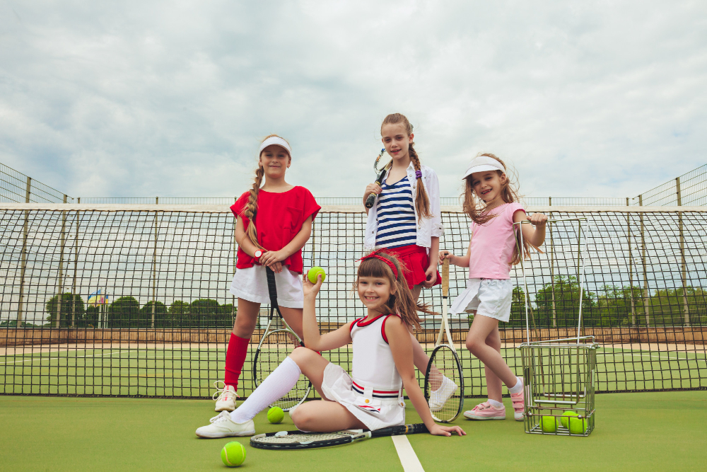
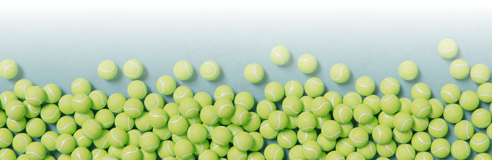

Bienvenido al Club de Tenis
En el corazón de nuestra comunidad, el Club de Tenis XYZ se erige como un oasis dedicado al apasionante mundo del tenis. Nos enorgullece ofrecer un ambiente acogedor y familiar donde niños de todas las edades pueden sumergirse en el emocionante universo de este deporte. Nuestro club se esfuerza por fomentar una cultura tenística vibrante y educativa que promueva no solo habilidades físicas, sino también valores fundamentales como la disciplina, la amistad y el espíritu deportivo.
Compromiso con el Futuro del Tenis
En el Club de Tenis XYZ, estamos comprometidos no solo con el presente, sino también con el futuro del tenis. Buscamos inspirar a la próxima generación de campeones y aficionados al deporte. A través de nuestro enfoque integral en el desarrollo físico y personal, esperamos sembrar las semillas del amor por el tenis en los corazones de los niños, proporcionándoles una base sólida para disfrutar de este maravilloso deporte a lo largo de sus vidas. ¡Bienvenidos a nuestro club, donde cada raqueta es una historia esperando ser escrita!
Programas de Desarrollo para Niños
En el Club de Tenis XYZ, entendemos la importancia de cultivar el amor por el tenis desde temprana edad. Ofrecemos programas especializados de desarrollo para niños, diseñados para nutrir tanto a principiantes como a jugadores más avanzados. Nuestros entrenadores altamente calificados no solo enseñan las técnicas fundamentales del tenis, sino que también fomentan la confianza, la perseverancia y el trabajo en equipo entre nuestros jóvenes miembros.

Nuestros programas incluyen:
- Clases Iniciales
- Desarrollo de Habilidades
- Torneos Amistosos
- Entrenamiento Físico
- Participación en Equipos
- Clases de Grupo Reducido
Eventos y Actividades Divertidas
Además de las clases regulares, organizamos una variedad de eventos y actividades divertidas para mantener el entusiasmo y la participación de los niños. Desde torneos amistosos hasta días temáticos llenos de juegos y risas, nuestro club se esfuerza por proporcionar experiencias tenísticas memorables que van más allá de la cancha. Creemos que la diversión es una parte esencial del aprendizaje, y nos esforzamos por crear un ambiente en el que cada niño pueda disfrutar mientras mejora sus habilidades.
